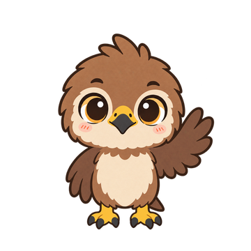
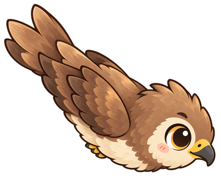
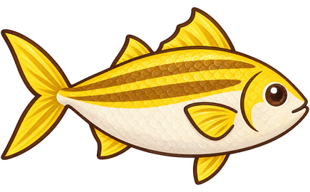
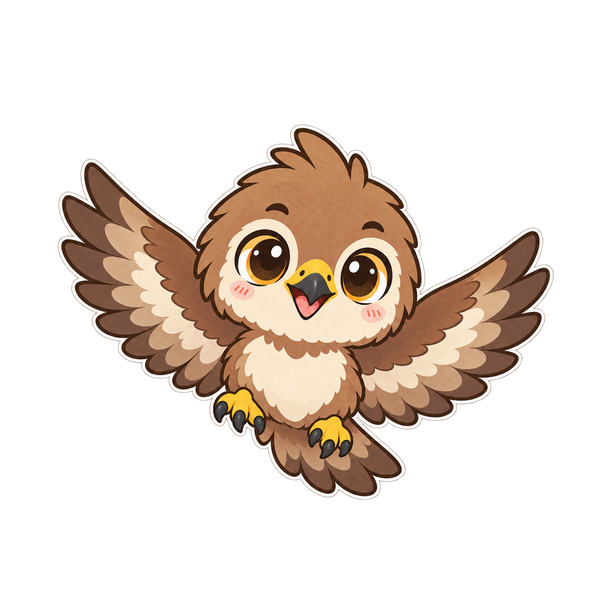
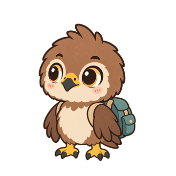
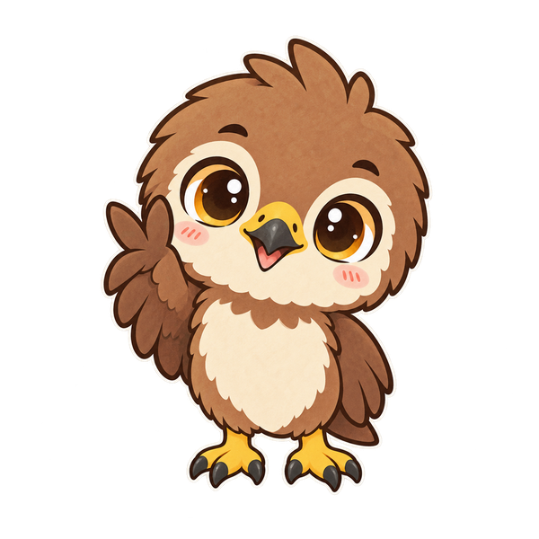
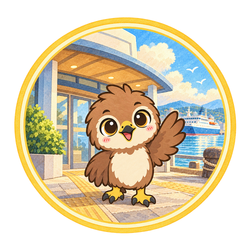
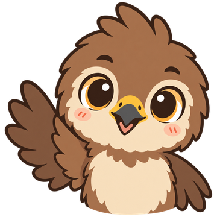

![]()
小鳶來港
今天想和小鳶玩什麼？
測試首頁 v86・素材都是暫用
選個入口
v0.25


小鳶捕魚點魚讓小鳶俯衝讀取中 v0.38
飛行冒險清垃圾、救朋友讀取中 v0.28
小鳶去旅行帶便當出門、寄明信片讀取中 v0.17
小鳶合照館拍照放小鳶和相框打開手機相機就能拍 v0.22
港灣蓋章散步現場掃 QR 收彩色章讀取中 v0.9
會員畫面入會、領點、核銷官方 LINE 原型測試選項
10/15 新加的，點了直接試
10/15 加的小改進（C-162 起），每一項都是建議版，Dari 看了不喜歡可以拿掉。
10/14 新加的，點了直接試
今天加的小改進（C-130～C-161），每一項都是建議版，Dari 看了不喜歡可以拿掉。
🍀 捕魚今日幸運魚（指定小卷）
🎉 捕魚破紀錄提醒（玩兩局）
🍱 捕魚便當差一點（抓到小卷或白帶魚但不夠時）
🌙 晚上推薦夜釣場（晚上 7 點後打開）
⏸ 飛行暫停看星星條件
💡 飛行沒過關小提示
🏮 飛行地圖夜景（晚上 7 點後打開）
🎉 飛行結算「這關最高分」＋新紀錄（同一關玩兩次）
🧭 小鳶旅途進度條
🎣 打包頁「去港邊抓魚」（沒有魚便當時）
🌙 小屋晚上變夜晚（晚上 7 點後打開）
⏱ 合照館 3 秒自拍＋小鳶說話
🏮 合照館晚上先換夜市燈籠相框（晚上 7 點後打開）
🧭 蓋完章給下一站謎語
🌙 蓋章夜間時段／打烊提示（晚上 6 點後打開）
❓ 港口朋友線索（點問號）
🏅 港口朋友收集家證書（要先見過其他五位）
🌙 港口朋友晚上說晚安（晚上 6 點後打開）
首頁上的：今日幸運魚、旅行倒數、下一站謎語、背包裡點港口朋友、晚上 7 點後的夜空（C-152）、晚上 10 點後小鳶打瞌睡（C-157）。